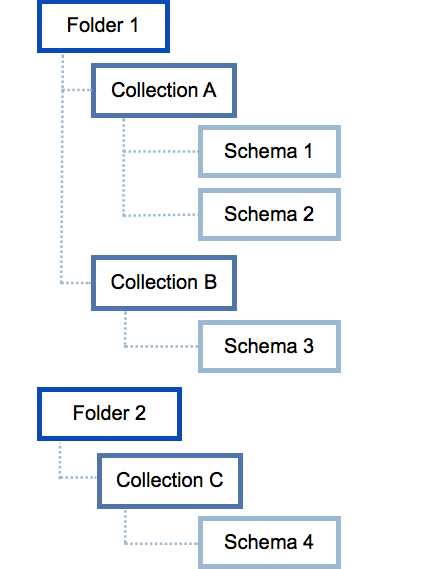

Virtual Data Source for NoSQL Databases¶
Alation Cloud Service Applies to Alation Cloud Service instances of Alation
Customer Managed Applies to customer-managed instances of Alation
Available from release V R5 (5.9.x)
You can catalog a NoSQL database in Alation using the Virtual Data Source (VDS) functionality and the dedicated API. Alation does not provide automated metadata extraction (MDE) for virtual data sources, and you will need to use the API to upload metadata. The structure of the uploaded metadata must meet several requirements.
To catalog your NoSQL data source,
Make sure you have enabled NoSQL support in your Alation catalog: Enabling NoSQL Data Source Support.
Add a Virtual Data Source (VDS) of NoSQL type: Adding a NoSQL Virtual Data Source.
Use NoSQL API to load the metadata: Notes on NoSQL API.
View and describe the uploaded metadata in the Alation catalog under this VDS.
Enabling NoSQL Data Source Support¶
NoSQL support is behind the feature flag
alation.feature_flags.enable_generic_nosql_support that can be enabled using alation_conf.
Note
You need SSH access to your Alation instance to enable feature flags.
To enable support of NoSQL data sources,
SSH into your Alation instance and enter the Alation shell:
sudo /etc/init.d/alation shellIf this command fails with error
chroot : failed to run command 'su': No such file or directory, try:sudo service alation shell
Run the following command to set the feature flag to
True:
alation_conf alation.feature_flags.enable_generic_nosql_support -s True
3. Restart uWSGI and Celery:
alation_supervisor restart web:uwsgi celery:*
NoSQL VDS Structure in Alation¶
A Generic NoSQL virtual data source (VDS) in Alation is modeled as a set of top-level folders, each having at least one collection. Each collection can have one or multiple schemas. The schemas in collections are used to describe the structure of the documents in your noSQL database:
{kind=link}
Before you can upload any metadata, you need to create your VDS in Alation. See Adding a NoSQL Virtual Data Source for steps. After that, use the NoSQL API to upload the metadata.
Notes on NoSQL API¶
To be uploaded using the API, the metadata for your NoSQL virtual data source must be represented as a single JSON object that includes such objects as folders, collections, and schemata, with the actual schemas wrapped in the schemata keys and represented in either JSON or Avro format (Avro support is available from release V R6 (5.10.x)).
This JSON object will be passed in the body of the API POST call.
Required JSON Structure¶
Top level is the folders key having the list of folder objects, each of them with the name property that defines the name of this folder object. It also has the collections key.
The collections key has the list of collection objects, each of them with the name property that defines the name of this collection object, and the schemata key.
The schemata key has a list of schema objects, each of them with the name property, having the name of the schema, and the definition property having the JSON schema object.
If you are using JSON to describe the schema, the schemata property must include the name and definition properties. The name property defines the name of the schema, and the definition property has the JSON schema object. See Creating the API Request Body with JSON
If you are using Avro to describe the schema, the schemata property must have your schema in Avro format. See Avro Data Types Support.
NoSQL API Call Body JSON Structure:
{
"folders": [
{"name": "$folder_name",
"collections": [
{"name": "$collection_name",
"schemata": [...]
}
]
}
]
}
Creating the API Request Body with JSON¶
Overview¶
JSON schemas do not need to be written by hand. Your database management platform may include an export tool to use to retrieve the database collections in JSON format. You can use this export tool, if available, to export all the collections you want to include in the catalog and then use a JSON schema generator to infer the schemas from.
Note
One JSON schema generator you can use is Genson.
After you have the JSON schemas, fill the JSON object structure required by the API with the JSON schemas of the collections which you want to upload to Alation. Schemas should be included in the definition key of the schemata key.
Important
name must be the first attribute in any JSON sub-object.
If you want to reference an object (using $ref), then make sure
the definitions property for this object appears in the JSON code
before you use this $ref.
Sample JSON Body Structure With Schemata:
{
"folders": [
{
"name": "$folder_name",
"collections": [
{
"name": "$collection_name",
"schemata": [
{
"name": "$name",
"definition":
{
"title": "$title",
"type": "$type",
"required": ["$attribute1", "$attribute2", "$attribute3"],
"properties":
{
"$attribute1": { "type": "$data_type"},
"$attribute2": { "type": "$data_type"},
"$attribute3": { "type": "$data_type"}
}
}
}
]
}
]
}
]
}
For property definitions, JSON examples, code samples, and detailed API instructions, refer to the NoSQL API documentation on Customer Portal (requires a separate login).
MongoDB Example¶
You can use this example for steps to create the JSON object for loading metadata into a MongoDB virtual data source (VDS):
Identify the MongoDB instance you want to catalog as a VDS, including authentication details (username/password), server network address, and the database name.
Connect to the MongoDB server with the Mongo client (usually /usr/bin/mongo ) and to list all the databases on the server, run:
show dbs
To verify you have the right database, run:
use <dbname> show collections
Exit the Mongo client console and go back to the OS shell.
A Mongo installation includes an export tool (usually /usr/bin/mongoexport) that can be used to retrieve the collections in JSON format. For example:
mongoexport -d local -c some_collection > schema_filewill export the contents of the
some_collectioncollection in the local database into theschema_filefile.Run the
mongoexportcommand on all collections you want to include in the catalog.
Use a JSON schema generator to infer the schema from the JSON objects of the collections. If you are using Genson, from the Genson installation directory, run the following command to output the schema of the objects in the schema_file :
python bin/genson.py schema_file
Fill in the required JSON object structure with the JSON schemas according to the NoSQL API.
When JSON is ready, you can make a POST request to the upload API to load the metadata to a virtual data source. This data source should already exist in Alation.